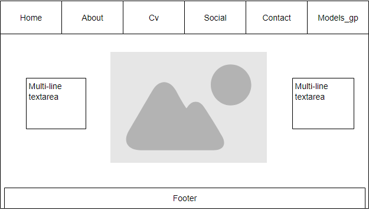
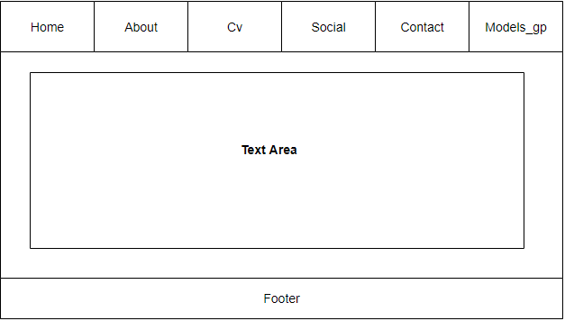
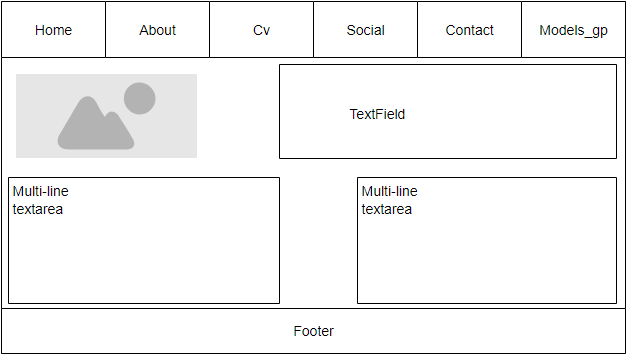
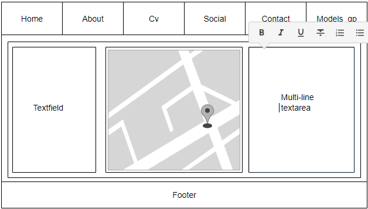
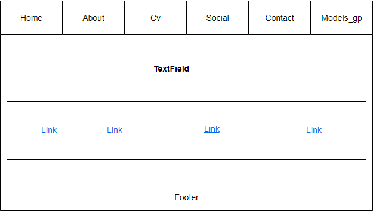
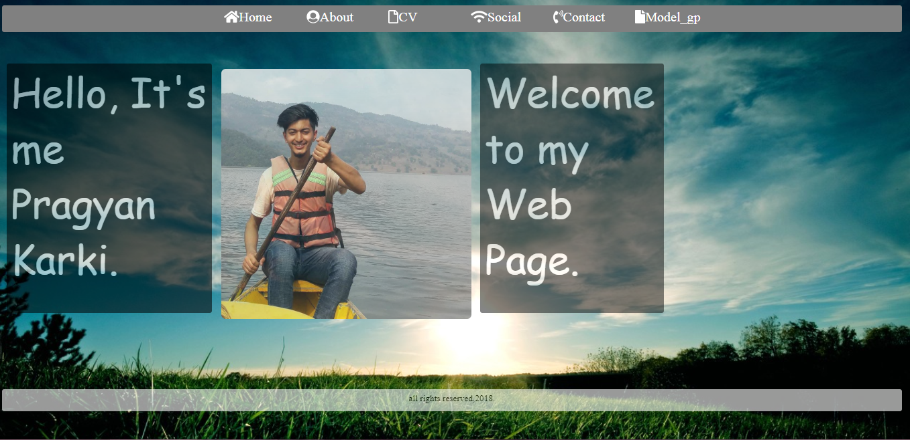
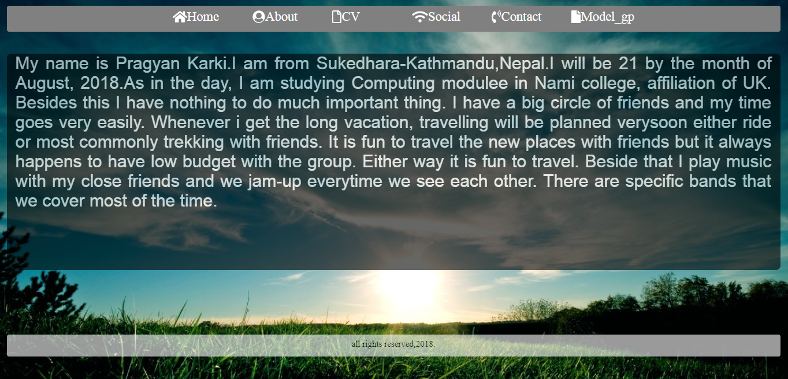
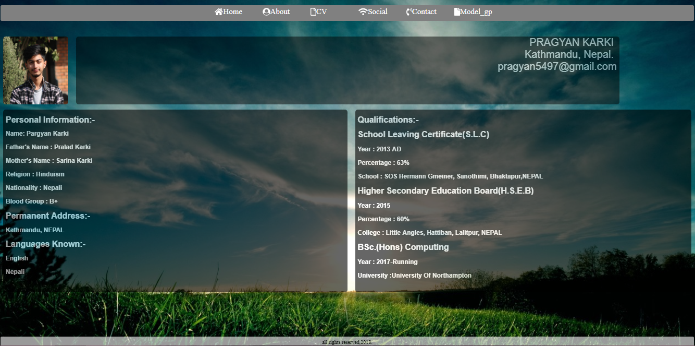
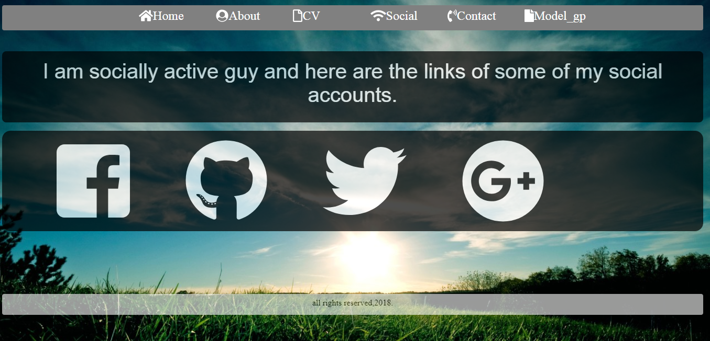

My Github link is:
UN ID: 18408450
Table of contents
- GETTING STARTED
- DESIGNS
- WIREFRAMES
- Wireframe of my Homepage
- Wireframe of my Aboutpage
- Wireframe of my Cvpage
- Wireframe of my Contactpage
- Wireframe of my Socialpage
- MOCKUP
- Sketch of my Homepage
- Sketch of my Aboutpage
- Sketch of my Cvpage
- Sketch of my Contactpage
- Sketch of my Socialpage
- DEVELOPMENTS OF WEBSITES
- EVIDENCES OF USING MODELS OF GP
- Navigation
- Visual appeal
- CONCLUSION
- REFRENCES
GETTING STARTED
Before getting started in creating the websites of mine I researched about how my portfolio should look like and what are the things that should be included in the websites since I don't have any idea and I am new in the field of designing websites. So, I did a research for this . Through different websites found in the internet I got many more ideas about the different layout and contents that are to be mentioned in the websites.During the research I found that almost every websites were attractive and beautiful because of the good quality of css,animiation,hover effects, transition property used by them.Those websites were also user friendly.But I also found that some of the websites were made using javascript and bootstraps.But as per the requirement given inthe assignment The websites should be completed using htl and css using different property like animation,transition,hover etc.
DESIGNS
Wireframes
Wireframe of my Homepage
Wireframe of my Aboutpage
Wireframe of my CVpage
Wireframe of my Contactpage
Wireframe of my Socialpage
MOCKUP
Sketch of my homepage

Sketch of my aboutpage

Sketch of my cvpage

Sketch of my contactpage

Sketch of my social

DEVELOPMENT OF WEBSITES
Design of my Homepage
This is my first webpage and the homepage of my weebsite.In the top of this page there is a navigation bar.In this firstpage I have used hover effect along with that I have alsos used animation features.I have also inserted the photo of mine in the middle of the page.And in both side I have made a textfield introducing myself.So when you click the on the photo and the textfield of my homepage the photo slides upwards and downwards due to animation.
Design of my Aboutpage
The second page of my website is about page.In this page also the navigation bar that is both header and footer are in fixed position.This page doesnot have any hover and animation effect and it's just a simple page describing about myself and my carrier towards University of Northampton as a student of Bsc(hons)Computing.
Design of my Cvpage
The curriculam vitae of mine has hover effect along with animation effect.The animiation duration is of 6sec and CV page contains the details about my schooling and personal information .This page also have fixed header and a footer.
Design of my Socialpage
Social page contains the details about the diffferent site that I'm usually connected with.This page also have fixed navigation bar.I have also used the hover effect with opacity 0.6 in different social links.
Design of my Contactpage
Contact page of my website contains the contact form where name address and feedback can be submitted.This page also have the location of my current permanent address and the contact number and the email address .This page also have fixed navigation bar.

EVIDENCES OF USING MODELS OF GP
Navigation
The navigation bar found in the websites should be attarctive and user-friendly.The website that I have created have a simple navigation bar.The navigation bar in every pages of the websites are fixed so whenever you look at every pages the navigation of the header appear at the top so people can easily find out what are the contents that my website have and footer at the bottom of the page.
Visual Appeal
Before getting started about creating the websites of mine I did a bit research about the different websites found in the internet and different portfolio which became very helpful for me to create the website.Different website found in the internet were user friendly.The color combination,font-size and different font-family used in the websites were attractive and beautiful.Not only that I also took a help from my colleauges about what are the different ,features,contents that I should have in my websites and what are the minimun criteria for making a website.
Validation of my websites
HTML Validation of my homepage

HTML Validtion of my aboutpage

HTML Validation of my cvpage

HTML Validation of my contactpage

HTML Validation of my social

CSS Validation of my CSS page

CONCLUSION
So,to sum up the whole report I have made a six different websites including the first landing page(homepage),about page,cv page,social page ,contact page and the models_gp page where I have written the report of my website.In order to make these different pages of website to look attractive and user friendly I have used different html and css property where hover,animiation,transition,come under the css features.As per the assignment requirement I have also properly used the different flex property and also diferent font family.
After the completation of this assessement I have learned different ideas about how the websites should look like what are the criteria that should be consider to make the website attractive and beautiful.Since,I don't have any idea about using css and html property before so after doing this assessement I gain ideas about building a website.
REFRENCES
HTML Tutorial. 2018. HTML Tutorial. [ONLINE] Available at: https://www.w3schools.com/html/default.asp. [Accessed 29 June 2018].
CSS Tutorial. 2018. CSS Tutorial. [ONLINE] Available at: https://www.w3schools.com/css/default.asp. [Accessed 29 June 2018]
Font Awesome 5. 2018. Font Awesome. [ONLINE] Available at: https://fontawesome.com/. [Accessed 29 June 2018].
Google Fonts. 2018. Google Fonts. [ONLINE] Available at: https://fonts.google.com/. [Accessed 29 June 2018].
W3Schools Online Web Tutorials. 2018. W3Schools Online Web Tutorials. [ONLINE] Available at: https://www.w3schools.com/. [Accessed 29 June 2018].
Codecademy. 2018. Learn HTML | Codecademy. [ONLINE] Available at: https://www.codecademy.com/learn/learn-html. [Accessed 29 June 2018].